Graph for For Inf Borr Save Outcomes for One Endo Asset Model
back to Fan's Dynamic Assets Repository Table of Content.
Contents
function ff_az_fibs_vf_post_graph(varargin)
FF_AZ_FIBS_VF_POST_GRAPH genereate 3 graphs
Generates these graphs:
- Stacked borrowing choices: separate subplot for different shocks; share y-axis scales; each chart, x-axis, current cash-on-hand levels, y-axis plot out results of several arrays. 1st array is formal choice, scattered height with unique color. 2nd array is the sum of formal + informal bridge. 3rd sum informal from formal+informal. 4th, formal savings. each use a different shape with increasing size so that later choices can show through. overall sum at the end should equal to aprime.
- Percentage credit market choices: similar file as above, except that now, rather than showing levels. Show percentages. divide each by aggregate asset level. Same Graph strategy. if 4 subplots, plotting with four levels of shocks.
- Participation regions, come up with all the possible formal and informal participation categories. What does the sorting map look like?
Run this function directly with randomly generates matrixes for graphs and tables.
@param param_map container parameter container
@param support_map container support container
@param armt_map container container with states, choices and shocks grids that are inputs for grid based solution algorithm
@param result_map container contains policy function matrix, value function matrix, iteration results; als coh consumption and other matrixes
@example
@include
Default
if (~isempty(varargin)) % if invoked from outside overrid fully [param_map, support_map, armt_map, func_map, result_map] = varargin{:}; else clear all; close all; % 1. internal invoke for testing it_param_set = 4; bl_input_override = true; % 2. Get Parameters [param_map, support_map] = ffs_abzr_fibs_set_default_param(it_param_set); [armt_map, func_map] = ffs_abzr_fibs_get_funcgrid(param_map, support_map, bl_input_override); % 1 for override % 3. Get Arrays and Functions params_group = values(param_map, {'it_a_n', 'it_z_n'}); [it_a_n, it_z_n] = params_group{:}; params_group = values(armt_map, {'ar_a'}); [ar_a] = params_group{:}; params_group = values(armt_map, {'ar_z_r_infbr_mesh_wage', 'ar_z_wage_mesh_r_infbr'}); [ar_z_r_inf_mesh_wage, ar_z_wage_mesh_r_inf] = params_group{:}; params_group = values(func_map, {'f_util_standin', 'f_cons_coh_fbis', 'f_cons_coh_save', 'f_coh'}); [f_util_standin, f_cons_coh_fbis, f_cons_coh_save, f_coh] = params_group{:}; % 4. Value Default mt_val = f_util_standin(ar_z_r_inf_mesh_wage, ar_a'); % 5. default optimal asset choices (overall, interesint + principle from % different formal and informal sources following how model is solved) mt_pol_a = zeros(size(mt_val)) + ... ar_a'*(cumsum(sort(ar_z_r_inf_mesh_wage))/sum(ar_z_r_inf_mesh_wage)*0.4 + 0.4); % 6. Default COH mt_coh = f_coh(ar_z_r_inf_mesh_wage, ar_a'); % 7. Set Default Consumption mt_pol_a_pos_idx = (mt_pol_a > 0); mt_pol_cons = zeros(size(mt_pol_a)); mt_pol_cons(mt_pol_a_pos_idx) = f_cons_coh_save(mt_coh(mt_pol_a_pos_idx), mt_pol_a(mt_pol_a_pos_idx)); mt_pol_cons(~mt_pol_a_pos_idx) = f_cons_coh_fbis(mt_coh(~mt_pol_a_pos_idx), mt_pol_a(~mt_pol_a_pos_idx)); % 8. Find Formal Informal Choices given Fake Data mt_pol_b_bridge = zeros(it_a_n,it_z_n); mt_pol_inf_borr_nobridge = zeros(it_a_n,it_z_n); mt_pol_for_borr = zeros(it_a_n,it_z_n); mt_pol_for_save = zeros(it_a_n,it_z_n); % 9. Solve for formal and informal combinations given the overall fake % choices. for it_z_i = 1:it_z_n for it_a_j = 1:it_a_n fl_z_r_borr = ar_z_r_inf_mesh_wage(it_z_i); fl_z_wage = ar_z_wage_mesh_r_inf(it_z_i); param_map('fl_r_inf') = fl_z_r_borr; fl_a = ar_a(it_a_j); fl_coh = f_coh(fl_z_wage, fl_a); fl_a_opti = mt_pol_a(it_a_j, it_z_i); % call formal and informal function. [~, fl_opti_b_bridge, fl_opti_inf_borr_nobridge, fl_opti_for_borr, fl_opti_for_save] = ... ffs_fibs_min_c_cost_bridge(fl_a_opti, fl_coh, ... param_map, support_map, armt_map, func_map, bl_input_override); % store savings and borrowing formal and inf optimal choices mt_pol_b_bridge(it_a_j,it_z_i) = fl_opti_b_bridge; mt_pol_inf_borr_nobridge(it_a_j,it_z_i) = fl_opti_inf_borr_nobridge; mt_pol_for_borr(it_a_j,it_z_i) = fl_opti_for_borr; mt_pol_for_save(it_a_j,it_z_i) = fl_opti_for_save; end end % 10. Set Results Map result_map = containers.Map('KeyType','char', 'ValueType','any'); result_map('mt_val') = mt_val; result_map('cl_mt_pol_a') = {mt_pol_a, zeros(1)}; result_map('cl_mt_coh') = {mt_coh, zeros(1)}; result_map('cl_mt_pol_c') = {mt_pol_cons, zeros(1)}; result_map('cl_mt_pol_b_bridge') = {mt_pol_b_bridge, zeros(1)}; result_map('cl_mt_pol_inf_borr_nobridge') = {mt_pol_inf_borr_nobridge, zeros(1)}; result_map('cl_mt_pol_for_borr') = {mt_pol_for_borr, zeros(1)}; result_map('cl_mt_pol_for_save') = {mt_pol_for_save, zeros(1)}; % Input over-ride bl_input_override = true; result_map = ffs_fibs_identify_discrete(result_map, bl_input_override); % Control which results to graph support_map('bl_graph_forinf_discrete') = true; support_map('bl_graph_forinf_pol_lvl') = true; support_map('bl_graph_forinf_pol_pct') = true; end
Parse Parameters
% Model Name params_group = values(param_map, {'st_model'}); [st_model] = params_group{:}; % param_map params_group = values(param_map, {'it_z_n'}); [it_z_n] = params_group{:}; % support_map4 params_group = values(support_map, {'bl_graph_onebyones', 'bl_graph_forinf_discrete', 'bl_graph_forinf_pol_lvl', 'bl_graph_forinf_pol_pct'}); [bl_graph_onebyones, bl_graph_forinf_discrete, bl_graph_forinf_pol_lvl, bl_graph_forinf_pol_pct] = params_group{:}; params_group = values(support_map, {'bl_img_save', 'st_img_path', 'st_img_prefix', 'st_img_name_main', 'st_img_suffix'}); [bl_img_save, st_img_path, st_img_prefix, st_img_name_main, st_img_suffix] = params_group{:}; params_group = values(support_map, {'st_title_prefix'}); [st_title_prefix] = params_group{:}; % armt_map params_group = values(armt_map, {'ar_a'}); [ar_a] = params_group{:}; if (ismember(st_model, ["ipwkbzr_fibs", "abzr_fibs"])) params_group = values(param_map, {'fl_z_r_infbr_n'}); [fl_z_r_borr_n] = params_group{:}; if (ismember(st_model, ["ipwkbzr_fibs"])) params_group = values(armt_map, {'ar_z_r_infbr_mesh_wage_w1r2', 'ar_z_wage_mesh_r_infbr_w1r2'}); elseif (ismember(st_model, ["abzr_fibs"])) params_group = values(armt_map, {'ar_z_r_infbr_mesh_wage', 'ar_z_wage_mesh_r_infbr'}); end [ar_z_r_inf_mesh_wage, ar_z_wage_mesh_r_inf] = params_group{:}; params_group = values(param_map, {'it_z_wage_n'}); [it_z_wage_n] = params_group{:}; else fl_z_r_borr_n = 1; params_group = values(armt_map, {'ar_z'}); [ar_z_wage_mesh_r_inf] = params_group{:}; params_group = values(param_map, {'it_z_n'}); [it_z_wage_n] = params_group{:}; end % result_map standards params_group = values(result_map, {'cl_mt_pol_a'}); [cl_mt_pol_a] = params_group{:}; [mt_pol_a] = deal(cl_mt_pol_a{1}); % result_map continuous formal informal choices params_group = values(result_map, {'cl_mt_pol_b_bridge', 'cl_mt_pol_inf_borr_nobridge', ... 'cl_mt_pol_for_borr', 'cl_mt_pol_for_save'}); [cl_mt_pol_b_bridge, cl_mt_pol_inf_borr_nobridge, cl_mt_pol_for_borr, cl_mt_pol_for_save] = params_group{:}; [mt_pol_b_bridge, mt_pol_inf_borr_nobridge, mt_pol_for_borr, mt_pol_for_save] = ... deal(cl_mt_pol_b_bridge{1}, cl_mt_pol_inf_borr_nobridge{1}, cl_mt_pol_for_borr{1}, cl_mt_pol_for_save{1}); % result_map discrete formal informal choices params_group = values(result_map, {'mt_it_frmsavng_only', 'mt_it_b_bridge_idx', 'mt_it_for_only_nbdg', ... 'mt_it_inf_only_nbdg', 'mt_it_frin_brr_nbdg', 'mt_it_fr_brrsv_nbdg'}); [mt_it_frmsavng_only, mt_it_b_bridge_idx, mt_it_for_only_nbdg, ... mt_it_inf_only_nbdg, mt_it_frin_brr_nbdg, mt_it_fr_brrsv_nbdg] = params_group{:}; % How many zs to Graph ar_it_z_graph = ([1 round((it_z_n)/4) round(2*((it_z_n)/4)) round(3*((it_z_n)/4)) (it_z_n)]);
Generate Limited Legends
% 8 graph points, 2 levels of borrow rates, and 4 levels of rbr rates ar_it_z_r_borr = ([1 round((fl_z_r_borr_n)/2) (fl_z_r_borr_n)]); ar_it_z_wage = ([1 round((it_z_wage_n)/2) (it_z_wage_n)]); % combine by index mt_it_z_graph = ar_it_z_wage' + it_z_wage_n*(ar_it_z_r_borr-1); ar_it_z_graph = mt_it_z_graph(:)'; % legends index final ar_it_legend2plot = ar_it_z_graph; ar_it_legend2plot_lth = ar_it_z_graph; if (ismember(st_model, ["ipwkbzr_fibs", "abzr_fibs"])) cl_st_legendCell = cellstr([num2str(ar_z_r_inf_mesh_wage', 'zr=%3.2f;'), ... num2str(ar_z_wage_mesh_r_inf', 'zw=%3.2f')]); else cl_st_legendCell = cellstr([num2str(ar_z_wage_mesh_r_inf', 'zw=%3.2f')]); end
Graph Optimal Discrete
States: cash-on-hand, shock Choices: discrete optimal choices
if (bl_graph_forinf_discrete) if (~bl_graph_onebyones) figure('PaperPosition', [0 0 14 4]); ar_sub_j = 1:1:2; else ar_sub_j = [1 2]; end for sub_j = ar_sub_j % start figure if (~bl_graph_onebyones) subplot(1, 2, sub_j); else figure('PaperPosition', [0 0 7 4]); end hold on; % Graph Optimal Discrete Gen Discrete Outcomes % * formal only (no bridge) % * Informal borrow only (no bridge) % * formal + informal borrow (no bridge) % * formal save + borrow (no bridge) % * bridge loan areas % Generate x and y arrays [ar_z_mw, ar_w_mz] = meshgrid(ar_z_wage_mesh_r_inf, ar_a); mt_x = ar_w_mz; mt_y = ar_z_mw; % colors etc cl_colors = {'blue', 'red', 'black', [0 0.4471 0.7412], 'blue', [.61 .51 .74]}; cl_legend = {'For Borr', 'Inf Borr', 'For+Inf Br', 'For+Br+Save', 'Bridge Loan', 'For Save'}; cl_shapes = {'s','x','o','d','p','*'}; it_basesize = 20; cl_csizes = {10*it_basesize, 20*it_basesize, 10*it_basesize, 10*it_basesize, 1*it_basesize, 2*it_basesize}; % graphs to run ar_it_graphs_run = 1:6; % ar_it_graphs_run = [6]; it_graph_counter = 0; for it_fig = ar_it_graphs_run % count cur graph it_graph_counter = it_graph_counter + 1; if (it_fig == 1) mt_cur_use_idx = mt_it_for_only_nbdg; end if (it_fig == 2) mt_cur_use_idx = mt_it_inf_only_nbdg; end if (it_fig == 3) mt_cur_use_idx = mt_it_frin_brr_nbdg; end if (it_fig == 4) mt_cur_use_idx = mt_it_fr_brrsv_nbdg; end if (it_fig == 5) mt_cur_use_idx = mt_it_b_bridge_idx; end if (it_fig == 6) mt_cur_use_idx = mt_it_frmsavng_only; end % Generate x and y ar_x = mt_x(mt_cur_use_idx); ar_y = mt_y(mt_cur_use_idx); % Color and Size etc it_csize = cl_csizes{it_fig}; ar_color = cl_colors{it_fig}; st_shape = cl_shapes{it_fig}; % Figure Collect if (ismember(sub_j, [1])) ar_x_use = ar_x; st_legend_loc = 'northeast'; end if (ismember(sub_j, [2])) ar_x_use = log(ar_x - min(ar_a) + 1); st_legend_loc = 'northeast'; end % Graph ls_chart(it_graph_counter) = scatter(ar_x_use, ar_y, it_csize, ar_color, st_shape); cl_legend{it_graph_counter} = cl_legend{it_fig}; end % legend legend(ls_chart, cl_legend, 'Location', st_legend_loc); % labeling title('Borrow and Save Regions') ylabel('Shocks') if (ismember(sub_j, [1])) st_x_label = {'Asset State'}; end if (ismember(sub_j, [2])) st_x_label = {'log(Asset State - min(asset) + 1)'}; end % Turn on X and Y lines or Not if (ismember(sub_j, [2])) xline0 = xline(log(0-min(ar_a)+1)); xline0.HandleVisibility = 'off'; yline0 = yline(0); yline0.HandleVisibility = 'off'; else xline0 = xline(0); xline0.HandleVisibility = 'off'; yline0 = yline(0); yline0.HandleVisibility = 'off'; end grid on; % save file if (bl_img_save) if ~exist(support_map('st_img_path'),'dir'); mkdir(support_map('st_img_path')); end; st_file_name = [st_img_prefix st_img_name_main '_fibs5' st_img_suffix]; saveas(gcf, strcat(st_img_path, st_file_name)); end end end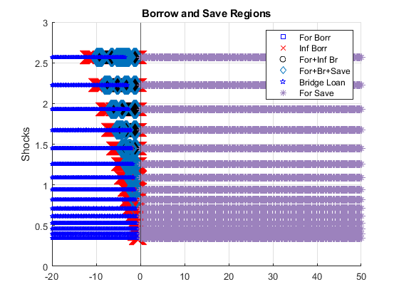 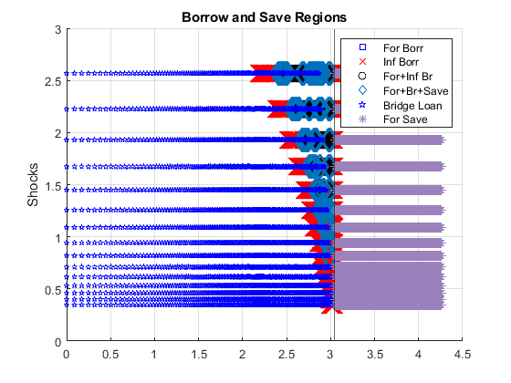
Graph Choice Levels
How much borrowing and savings of different types given a and shocks
if (bl_graph_forinf_pol_lvl) if (~bl_graph_onebyones) figure('PaperPosition', [0 0 28 8]); ar_sub_j = 1:1:8; else ar_sub_j = [1 5 2 6 3 7 4 8]; end for sub_j = ar_sub_j if (ismember(sub_j, [1,5])) mt_outcome = mt_pol_b_bridge; end if (ismember(sub_j, [2,6])) mt_outcome = mt_pol_inf_borr_nobridge; end if (ismember(sub_j, [3,7])) mt_outcome = mt_pol_for_borr; end if (ismember(sub_j, [4,8])) mt_outcome = mt_pol_for_save; end if (~bl_graph_onebyones) subplot(2, 4, sub_j); else figure('PaperPosition', [0 0 7 4]); end hold on; % Color Set clr = jet(length(ar_it_z_graph)); % Iterate over Shocks to Graph (Finite Graphs) i_ctr = 0; for i = ar_it_z_graph i_ctr = i_ctr + 1; ar_opti_curz = mt_outcome(:, i); if (ismember(sub_j, [1,2,3,4])) % levels ar_a_curz_use = ar_a'; ar_opti_curz_use = ar_opti_curz'; elseif (ismember(sub_j, [5,6,7,8])) % logs ar_a_curz_use = log(ar_a' - min(ar_a) + 1); if (ismember(sub_j, [5,6,7])) % Borrowing Choices -(log(-(-5)+1)) ar_opti_curz_use = -log( - ar_opti_curz' + 1); end if (ismember(sub_j, [8])) % Savings Choices ar_opti_curz_use = log(ar_opti_curz' + 1); end end scatter(ar_a_curz_use, ar_opti_curz_use, 5, ... 'MarkerEdgeColor', clr(i_ctr,:), ... 'MarkerFaceColor', clr(i_ctr,:)); end % X Label if (ismember(sub_j, [1,2,3,4])) st_x_label = {'Asset State'}; st_graph_loc = 'northwest'; end if (ismember(sub_j, [5,6,7,8])) st_x_label = {'log(Asset State - min(asset) + 1)'}; if (ismember(sub_j, [5])) st_graph_loc = 'southeast'; elseif (ismember(sub_j, [6])) st_graph_loc = 'southeast'; elseif (ismember(sub_j, [7])) st_graph_loc = 'southeast'; elseif (ismember(sub_j, [8])) st_graph_loc = 'northwest'; end end % Y Label if (ismember(sub_j, [1,5])) st_y_label = 'Bridge Loan Borrowing'; if (ismember(sub_j, [5])) st_y_label = ['-log(-(' st_y_label ')+1)' ]; end end if (ismember(sub_j, [2,6])) st_y_label = 'Inf Borr (-bridge)'; if (ismember(sub_j, [6])) st_y_label = ['-log(-(' st_y_label ')+1)' ]; end end if (ismember(sub_j, [3,7])) st_y_label = 'For Borr Menu'; if (ismember(sub_j, [7])) st_y_label = ['-log(-(' st_y_label ')+1)' ]; end end if (ismember(sub_j, [4,8])) st_y_label = 'Savings'; if (ismember(sub_j, [8])) st_y_label = ['log(' st_y_label '+1)' ]; end end % Grid grid on; grid minor; % Legend % legendCell = cellstr(num2str(ar_z', 'shock=%3.2f')); % legend(legendCell(ar_it_z_graph), 'Location', st_graph_loc); legend(cl_st_legendCell(ar_it_legend2plot), 'Location', st_graph_loc); % Title and X Y Labels title([st_title_prefix st_y_label]); ylabel(st_y_label); xlabel(st_x_label); % 45 Degree Line if (ismember(sub_j, [1,2,3,4])) hline = refline([1 0]); hline.Color = 'k'; hline.LineStyle = ':'; hline.HandleVisibility = 'off'; end % Turn on X and Y lines or Not if (ismember(sub_j, [5,6,7,8])) xline0 = xline(log(0-min(ar_a)+1)); xline0.HandleVisibility = 'off'; if (ismember(sub_j, [5,6,7])) yline0 = yline(-log(0+1)); yline0.HandleVisibility = 'off'; end if (ismember(sub_j, [8])) yline0 = yline(log(0+1)); yline0.HandleVisibility = 'off'; end else xline0 = xline(0); xline0.HandleVisibility = 'off'; yline0 = yline(0); yline0.HandleVisibility = 'off'; end end % save file if (bl_img_save) if ~exist(support_map('st_img_path'),'dir'); mkdir(support_map('st_img_path')); end; st_file_name = [st_img_prefix st_img_name_main '_pol_lvl' st_img_suffix]; saveas(gcf, strcat(st_img_path, st_file_name)); end end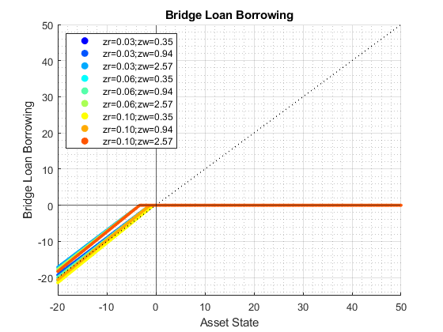 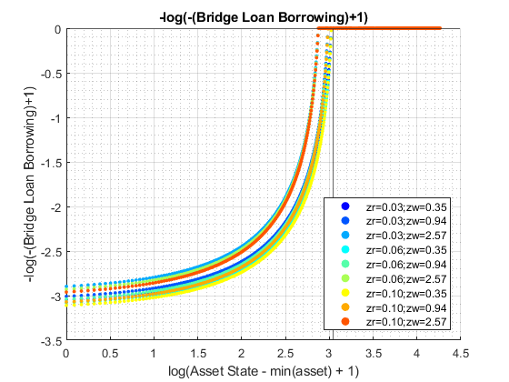 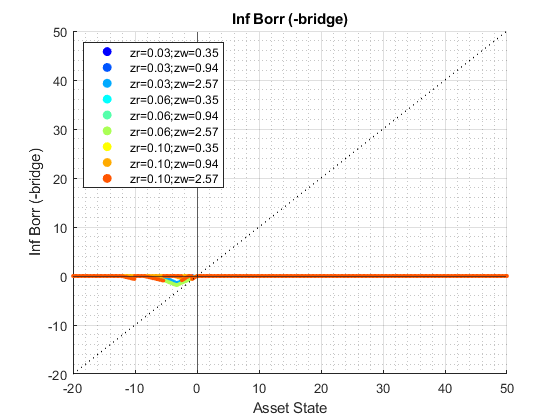 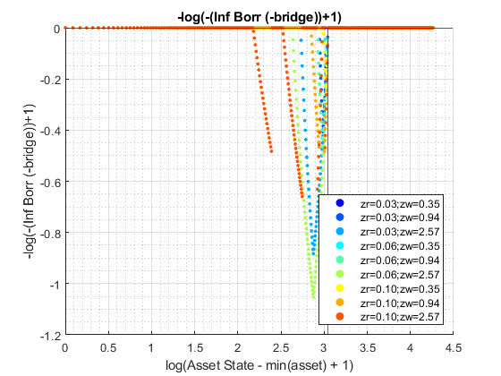 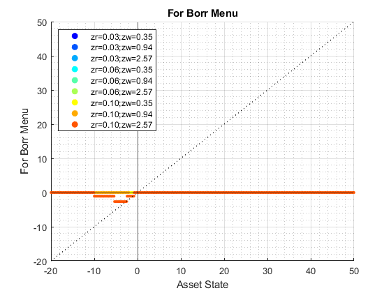 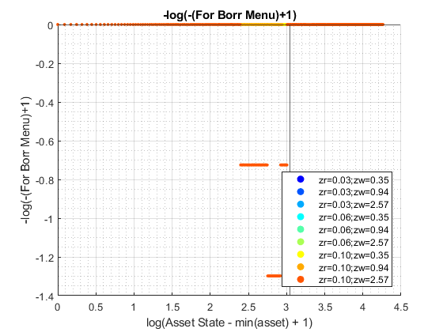 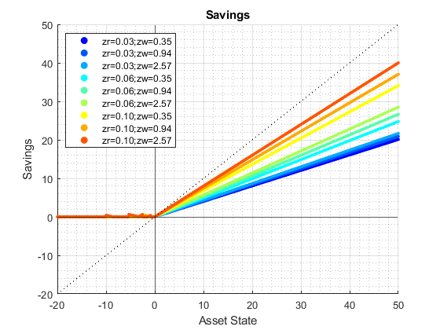 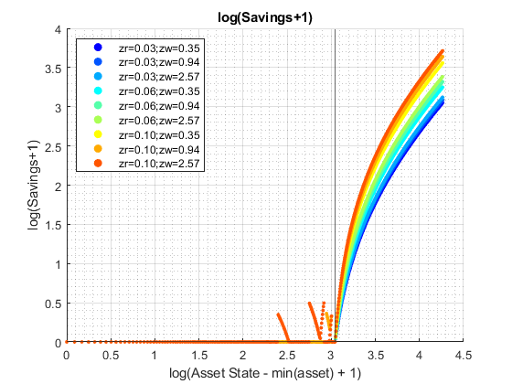
Graph Choice Percentages
Percentage of Aggregate accounted for by this choice. Very similar to above, except now divide by mt_pol_a
if (bl_graph_forinf_pol_pct) if (~bl_graph_onebyones) figure('PaperPosition', [0 0 28 8]); ar_sub_j = 1:1:8; else ar_sub_j = [1 5 2 6 3 7 4 8]; end for sub_j = ar_sub_j if (ismember(sub_j, [1,5])) mt_outcome = mt_pol_b_bridge./mt_pol_a; end if (ismember(sub_j, [2,6])) mt_outcome = mt_pol_inf_borr_nobridge./mt_pol_a; end if (ismember(sub_j, [3,7])) mt_outcome = mt_pol_for_borr./mt_pol_a; end if (ismember(sub_j, [4,8])) mt_outcome = mt_pol_for_save./mt_pol_a; end if (~bl_graph_onebyones) subplot(2, 4, sub_j); else figure('PaperPosition', [0 0 7 4]); end hold on; % Color Set clr = jet(length(ar_it_z_graph)); % Iterate over Shocks to Graph (Finite Graphs) i_ctr = 0; for i = ar_it_z_graph i_ctr = i_ctr + 1; ar_opti_curz = mt_outcome(:, i); if (ismember(sub_j, [1,2,3,4])) % levels ar_a_curz_use = ar_a'; ar_opti_curz_use = ar_opti_curz'; elseif (ismember(sub_j, [5,6,7,8])) % logs ar_a_curz_use = log(ar_a' - min(ar_a) + 1); if (ismember(sub_j, [5,6,7])) % Borrowing Choices -(log(-(-5)+1)) ar_opti_curz_use = -log( - ar_opti_curz' + 1); end if (ismember(sub_j, [8])) % Savings Choices ar_opti_curz_use = log(ar_opti_curz' + 1); end end scatter(real(ar_a_curz_use), real(ar_opti_curz_use), 5, ... 'MarkerEdgeColor', clr(i_ctr,:), ... 'MarkerFaceColor', clr(i_ctr,:)); end % X Label if (ismember(sub_j, [1,2,3,4])) st_x_label = {'Asset State'}; end if (ismember(sub_j, [5,6,7,8])) st_x_label = {'log(Asset State - min(asset) + 1)'}; end % Y Label if (ismember(sub_j, [1,5])) st_y_label = 'Bridge Loan Share'; if (ismember(sub_j, [5])) st_y_label = ['-log(-(' st_y_label ')+1)' ]; end st_graph_loc = 'northeast'; end if (ismember(sub_j, [2,6])) st_y_label = 'Inf Borr (-bridge) Share'; if (ismember(sub_j, [6])) st_y_label = ['-log(-(' st_y_label ')+1)' ]; st_graph_loc = 'northwest'; else st_graph_loc = 'northeast'; end end if (ismember(sub_j, [3,7])) st_y_label = 'For Borr Menu Share'; if (ismember(sub_j, [7])) st_y_label = ['-log(-(' st_y_label ')+1)' ]; st_graph_loc = 'northwest'; else st_graph_loc = 'northeast'; end end if (ismember(sub_j, [4,8])) st_y_label = 'Savings Share'; if (ismember(sub_j, [8])) st_y_label = ['log(' st_y_label '+1)' ]; st_graph_loc = 'southwest'; else st_graph_loc = 'southeast'; end end % Grid grid on; grid minor; % Legend % legendCell = cellstr(num2str(ar_z', 'shock=%3.2f')); % legend(legendCell(ar_it_z_graph), 'Location', st_graph_loc); legend(cl_st_legendCell(ar_it_legend2plot), 'Location', st_graph_loc); % Title and X Y Labels title([st_title_prefix st_y_label]); ylabel(st_y_label); xlabel(st_x_label); % Turn on X and Y lines or Not if (ismember(sub_j, [5,6,7,8])) xline0 = xline(log(0-min(ar_a)+1)); xline0.HandleVisibility = 'off'; if (ismember(sub_j, [5,6,7])) yline0 = yline(-log(0+1)); yline0.HandleVisibility = 'off'; yline1 = yline(+log(1)); yline1.HandleVisibility = 'off'; end if (ismember(sub_j, [8])) yline0 = yline(log(0+1)); yline0.HandleVisibility = 'off'; yline1 = yline(log(1)); yline1.HandleVisibility = 'off'; end else xline0 = xline(0); xline0.HandleVisibility = 'off'; yline0 = yline(0); yline0.HandleVisibility = 'off'; if (ismember(sub_j, [1,2,3])) % borrowing/borrow positive yline1 = yline(1); yline1.HandleVisibility = 'off'; elseif (ismember(sub_j, [4])) % savings/borrow save/save yline1 = yline(+1); yline1.HandleVisibility = 'off'; ylineneg1 = yline(-1); ylineneg1.HandleVisibility = 'off'; end end end % save file if (bl_img_save) if ~exist(support_map('st_img_path'),'dir'); mkdir(support_map('st_img_path')); end; st_file_name = [st_img_prefix st_img_name_main '_pol_pct' st_img_suffix]; saveas(gcf, strcat(st_img_path, st_file_name)); end end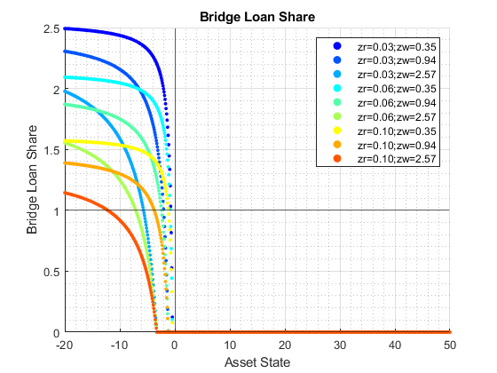 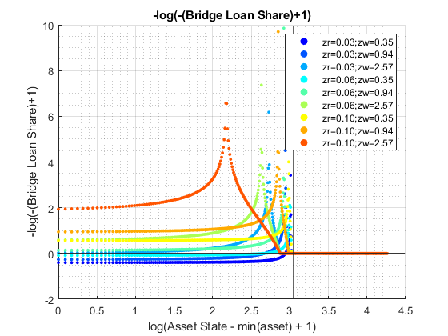 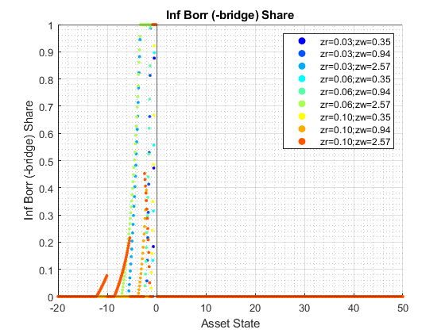 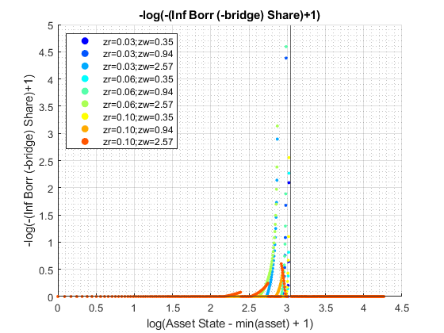 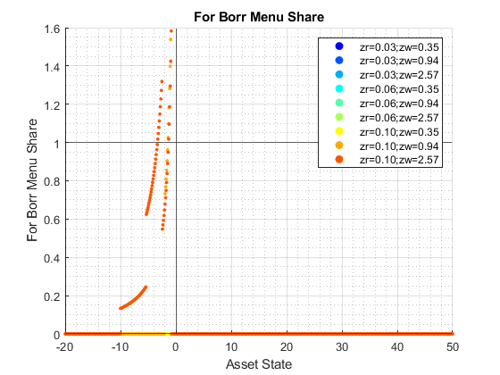 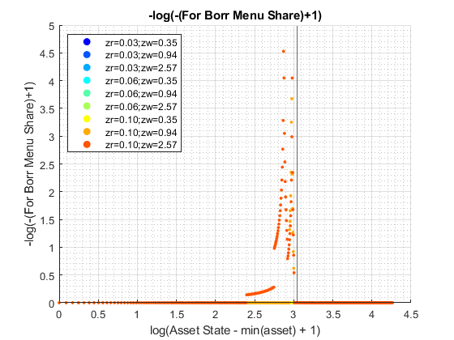 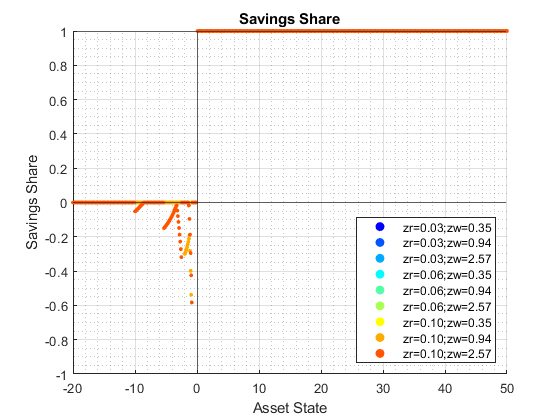 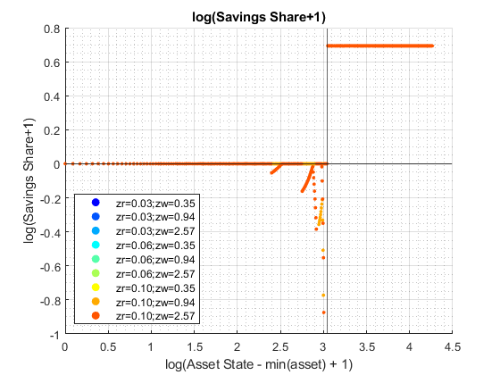
end